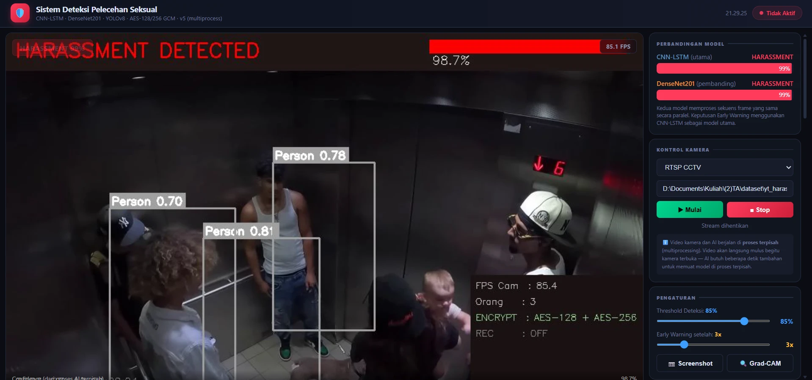

Final project
Sexual Harassment Detection System
Real-time video analysis that detects people with YOLOv8 Nano, classifies their activity with a CNN-LSTM, and sends encrypted video evidence to Telegram when it finds a threat.
- Python
- YOLOv8 Nano
- CNN-LSTM
- DenseNet201
- AES-GCM
- Telegram Bot API
Overview
My undergraduate final project. The system watches a live video feed and flags possible sexual harassment as it happens. A two-stage design keeps it fast enough for real time: YOLOv8 Nano finds the people in each frame, then a CNN-LSTM classifies what they are doing across a sequence of frames. DenseNet201 was trained as a comparison model to evaluate the trade-off between accuracy and speed.
Gallery

Objectives
- Detect harassment incidents from video in real time instead of reviewing footage after the fact.
- Warn responders early, with evidence attached.
- Keep recorded evidence confidential while it is sent and stored.
Key features
- Human detection with YOLOv8 Nano.
- Temporal activity classification with a CNN-LSTM architecture.
- DenseNet201 comparison model for evaluation.
- Early warning when a threat is classified.
- Automatic recording with a pre-event buffer, so the clip includes the moments before the alert.
- Evidence encrypted with AES-128-GCM and AES-256-GCM before it leaves the device.
- Telegram notifications with the encrypted evidence.
Technologies
- Python
- YOLOv8 Nano
- CNN-LSTM
- DenseNet201
- AES-128-GCM
- AES-256-GCM
- Telegram Bot API